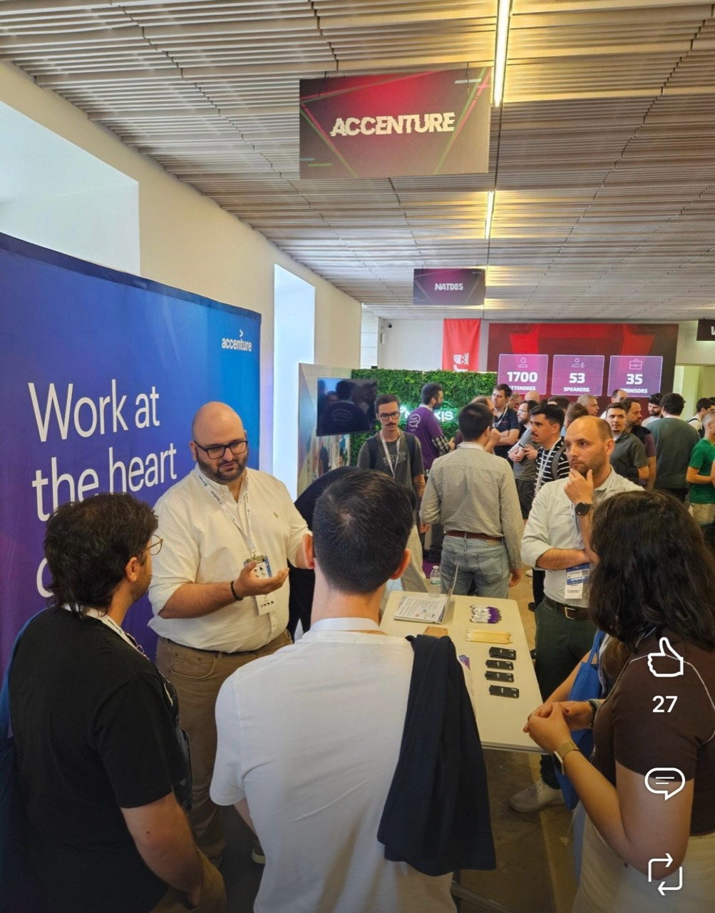
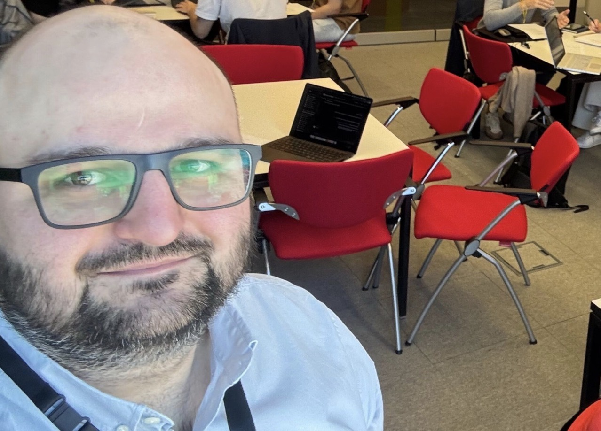
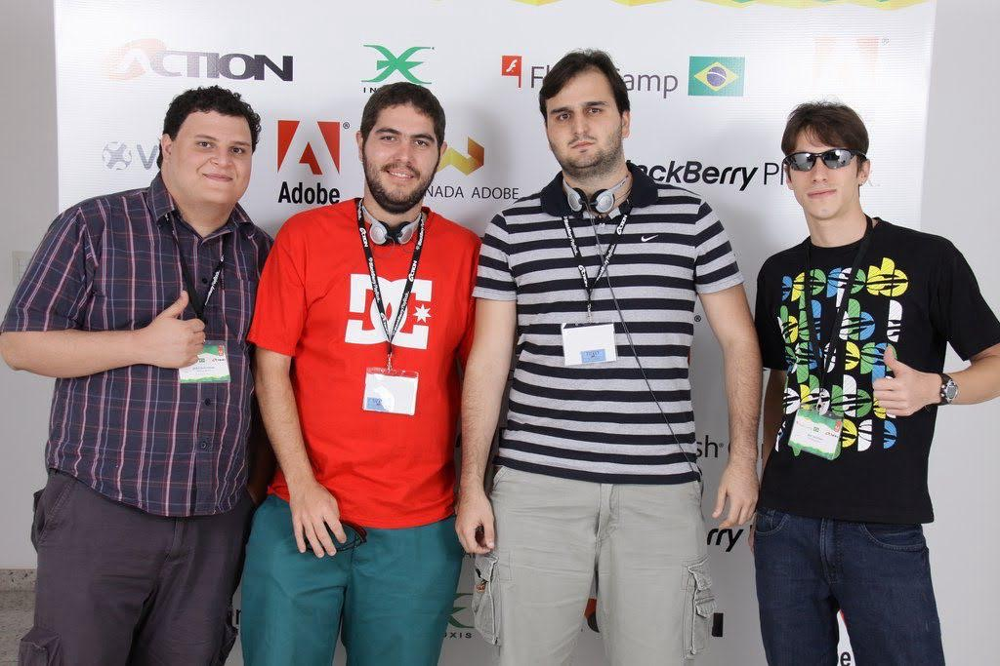
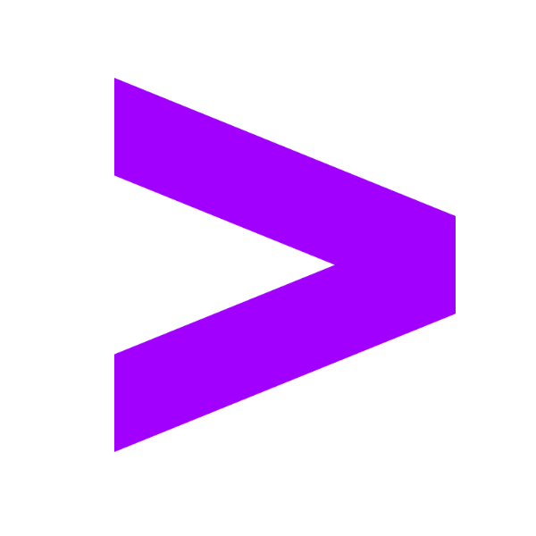
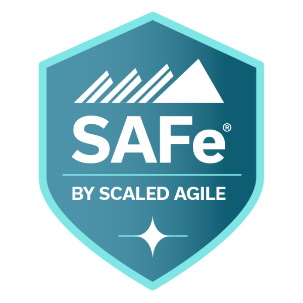
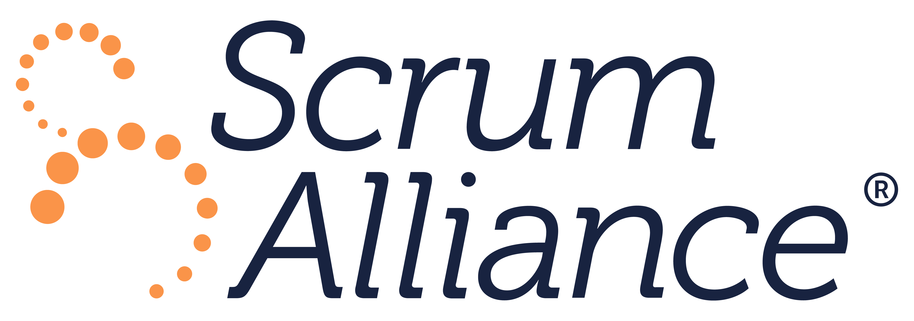

01 / SEGURANÇA E LIDERANÇA
Bem-vindo, humano ou agente — eu sou Paulo Sanches e todo dia é dia de jogo. Vamos!
Vamos conversar no LinkedIn (abre em uma nova aba)01 / PERFIL
Ajudo empresas a transformar seus negócios por meio da tecnologia e da IA, trabalhando com suas equipes e agentes de IA, da estratégia à execução.
Gerente de Tecnologia e Arquitetura de Soluções, com mais de 17 anos liderando equipes, resolvendo desafios tecnológicos complexos e estabilizando programas de missão crítica. Lidera uma área de DevOps com mais de 60 profissionais e orienta tecnicamente mais de 20 arquitetos de diferentes áreas.
Responsável por uma transformação de €7 milhões no setor público europeu e contribuiu para a conquista de €3,5 milhões em contratos empresariais. Combina resolução prática de problemas, uma relação de confiança com clientes e adoção de IA pronta para produção para entregar resultados duradouros.
02 / EXPERIÊNCIA
Os projetos
que me formaram.
Todo projeto deixa algo. Uma nova perspectiva, uma pergunta melhor ou um aprendizado que levo para o próximo.
-
Em andamentoEuropa · Portugal e Grécia
TRANSFORMAÇÃO DO SETOR PÚBLICO EUROPEU
Serviços públicos europeus.
Modernização de sete aplicações de pesca, controle marítimo e gestão de cotas na AWS, com responsabilidade pela entrega, qualidade do serviço e relacionamento com o cliente.
Saiba mais sobre os serviços públicos europeus
Responsabilidades e resultados
- Responsável por um programa de transformação de €7 milhões no setor público europeu e por uma equipe de 15 pessoas em Portugal e na Grécia, incluindo desempenho do contrato, finanças, relacionamento com o cliente e qualidade.
- Criou um Architecture Board e uma governança baseada em ADRs para orientar a evolução de sete aplicações legadas para serviços desacoplados, serverless e orientados a eventos.
- Obteve aprovação executiva para mudanças de FinOps, backup e recuperação de desastres, reduzindo em 31% o gasto mensal com AWS.
- Introduziu fluxos de desenvolvimento com agentes e validações humanas de qualidade, reduzindo em 78% o tempo de desenvolvimento de regras de negócio. Os agentes operacionais de AIOps estão sendo ampliados para as equipes do cliente.
- Estabilizou uma equipe multinacional e manteve baixa rotatividade por mais de dois anos, por meio de orientação e responsabilidade compartilhada.
-
Em paraleloEm andamentoPortugal · Aliança AWS
PRÉ-VENDAS ESTRATÉGICAS E ALIANÇA AWS
Soluções empresariais e parceria com AWS.
Desenho de soluções empresariais, propostas técnicas e iniciativas conjuntas com a AWS para clientes.
Saiba mais sobre soluções empresariais e a parceria com AWS
Responsabilidades e resultados
- Lidera as frentes técnicas de RFPs, decisões de arquitetura, dimensionamento de equipes, estimativas de esforço e apresentações executivas, contribuindo para €3,5 milhões em contratos conquistados. As equipes comerciais são responsáveis pelos preços finais e pelas negociações.
- Desenhou uma proposta de conciliação de faturas baseada em Kubernetes para um grupo de varejo português, liderando o levantamento da arquitetura e a passagem para a equipe de entrega.
- Atua como referência técnica da aliança Accenture Portugal–AWS, desenvolvendo iniciativas conjuntas de go-to-market, workshops com clientes e hackathons de IA agêntica e AIOps.
-
Em andamentoPortugal
PLATAFORMA DE PESSOAS E PORTFÓLIO
Pessoas e portfólio empresarial.
Integração de dados de pessoas e projetos em uma plataforma empresarial segura para planejar a capacidade e apoiar decisões sobre o portfólio.
Saiba mais sobre a plataforma de pessoas e portfólio
Responsabilidades e resultados
- Desenhou a arquitetura da plataforma e liderou uma equipe multidisciplinar de engenharia com 15 pessoas, usando integrações empresariais, GCP, Terraform, pipelines de Azure DevOps e SSO com Microsoft Entra ID.
- Adotada por oito áreas da Accenture Portugal, com dados de mais de 1.500 pessoas e mais de 500 projetos, para mais de 100 usuários executivos e de PMO.
- Permitiu decisões baseadas em dados sobre contratação, alocação de pessoas, previsão de projetos e governança de custos, com a plataforma desenhada para uma possível expansão global.
-
Trajetória anteriorBrasil e Europa
ENGENHARIA E LIDERANÇA TÉCNICA
Experiências anteriores.
Engenharia prática, liderança de equipes e arquitetura em produtos digitais, integração empresarial, modernização em nuvem e programas de transformação.
Responsabilidades e resultados
- Telecomunicações (2021–2023): Liderou a capacitação técnica de dez squads e mais de 100 engenheiros, viabilizando a integração de mais de 90 engenheiros em quatro meses.
- Consultoria de nuvem: Revisou soluções em um comitê conjunto de arquitetura de uma instituição de investimento europeia.
- Bancos, utilities e finanças (entre 2014 e 2021): Gerenciou equipes de aplicativos bancários, integrou Azure, AWS, SAP e Salesforce e liderou a automação de processos de financiamento de veículos, associada a um aumento de 35% nas vendas e aprovações de crédito.
- Produtos digitais (2009–2014): Liderou equipes multidisciplinares na Ogilvy, entregando produtos e campanhas para marcas globais de tecnologia, automóveis, telecomunicações e bens de consumo.
Projetos selecionados, com algumas atuações em paralelo.
03 / VIVÊNCIAS
Há uma história
por trás do trabalho.
Os momentos que não cabem em um currículo. As mudanças inesperadas, as conversas e o que aprendi pelo caminho.
Uma semana na praia.
Leia a história completa02 / ENTREGA E EXPECTATIVAS
Embarquei para o maior banco do Brasil com um briefing de poucos tópicos.
Leia a história completa03 / EQUIPE E PROPÓSITO
Construímos um sistema para apoiar as famílias atingidas em Brumadinho.
Leia a história completa04 / COMUNIDADE E SELEÇÃO
“Você conhece o Zeno Rocha?”
Leia a história completa04 / MINDSET
Minha filosofia.
Deslize ou role para conhecer meu mindset.
-
O que me molda.
São frases, pensamentos e reflexões que encontrei em livros, filmes, séries e músicas, e que ouvi de líderes e colegas ao longo da carreira. Ficaram comigo porque expressam aquilo em que acredito e ajudam a formar quem sou, na vida e no trabalho.
-

“Tudo certo para dar errado?” (PT-BR)
Em inglês, a ideia é:
Costumo fazer essa pergunta no começo do dia. Espero que as coisas deem certo e quero que estejamos preparados caso não deem. Pensar antes nos dá confiança para lidar com o inesperado e seguir em frente.
-
“Mar calmo não faz bom marinheiro.” (PT-BR)
Em inglês, a ideia é:
Os desafios me levam a aprender, me adaptar e melhorar. Ficar na zona de conforto não me leva mais longe.
-

“Planejação” (PT-BR)
Na linha de fazer acontecer:
Ouvi essa palavra de um grande líder com quem trabalhei. Ela une planejamento e ação: planejar o suficiente para seguir, depois executar. Quando o planejamento vira uma fase isolada, tudo pode ficar mais lento — e às vezes a ação nunca acontece.
-

“Todo planejamento foi feito para dar errado.” (PT-BR)
Em inglês, a ideia é:
Por mais cuidado que tenhamos ao planejar, algo vai sair do plano. Não controlamos tudo. Aceitar isso me ajuda a lidar com as mudanças com mais leveza e a estar aberto ao inesperado.
-

“Today is GAME DAY! VAMOOOSSSS.”
Digo isso para dar energia ao time e alinhar nosso propósito e missão. Atletas treinam para o dia do jogo — o momento de colocar a preparação em prática. É um lembrete para chegarmos preparados, focados e comprometidos.
05 / CONTRIBUIÇÕES
Palestras, eventos
e contribuições.
Deslize ou role para explorar palestras e eventos.
-

JNation .
Representando a Accenture no JNation 2026 em Coimbra, em contato com a comunidade de tecnologia e compartilhando nosso trabalho de transformação de negócios em Portugal e nos mercados internacionais.
Ver foto (abre em uma nova aba) -

Hackathon de IA .
Hackathon de IA realizado simultaneamente em Lisboa, Braga e Coimbra, reunindo mais de 40 estudantes universitários e colegas da Accenture para explorar casos de uso, colaborar e desenvolver novas ideias.
Ver foto (abre em uma nova aba) -
Como se tornar Tech Lead.
Minha participação na segunda masterclass do Cubo for Devs, sobre o caminho para a liderança técnica.
Assista no YouTube (abre em uma nova aba) -

FlashCamp .
Representando a Ogilvy no FlashCamp 2010, o maior evento da comunidade Adobe no Brasil.
06 / CERTIFICAÇÕES
Certificações.
Certificações, cursos e reconhecimentos profissionais.
Deslize ou role para explorar as 25 credenciais.
-
Global Leader | Certified by Deel
Deel
Reconhecimento em liderança de equipes globais, colaboração multicultural, estratégia em diferentes mercados e sistemas que apoiam equipes distribuídas.
Emitida em
-

Senior Technology Architect
Accenture
Reconhecimento avançado em arquitetura, abrangendo liderança técnica em projetos complexos, decisões tecnológicas com clientes, governança de arquitetura e compartilhamento de conhecimento.
Emitida em
-

AWS Certified Solutions Architect – Associate
Amazon Web Services (AWS)
Desenho de soluções AWS que equilibram resiliência, segurança, desempenho e custo, usando princípios consolidados de arquitetura em nuvem.
Emitida em
Validade:
-
Cloud Solution Architect Certified
Accenture
Planejamento de soluções em nuvem que integra arquitetura, casos de negócio, estruturação comercial, estimativas de custo e preços.
Emitida em
-
Certified Delivery Professional
Accenture
Certificação em gestão da entrega, abrangendo governança, contratos, gestão financeira e qualidade, com foco nas expectativas dos clientes e no valor para o negócio.
Emitida em
-
AWS Certified Developer – Associate
Amazon Web Services (AWS)
Desenvolvimento, testes e implantação de aplicações AWS, com fluxos de entrega contínua e resolução de problemas ao longo do ciclo de vida da aplicação.
Emitida em
Validade:
-
Technology Architect
Accenture
Certificação em arquitetura, abrangendo desenho de soluções, governança, liderança de equipes de tecnologia e colaboração com arquitetos dos clientes.
Emitida em
-
Reinvention with Agentic AI
Accenture
Aprendizado prático em IA agêntica, combinando conceitos fundamentais e workshops para aplicar agentes de IA a desafios e processos de negócio.
Emitida em
-
AWS Certified AI Practitioner
Amazon Web Services (AWS)
Fundamentos de IA, aprendizado de máquina e IA generativa, e suas aplicações em serviços AWS e cenários de negócio.
Emitida em
Validade:
-
Well-Architected Proficient
Amazon Web Services (AWS)
Revisão de arquiteturas em nuvem com o AWS Well-Architected Framework e sua ferramenta para identificar riscos e orientar melhorias.
Emitida em
-

SAFe Agilist Certification
SAFe by Scaled Agile, Inc.
Liderança Lean-Agile em escala empresarial, abrangendo princípios SAFe, entrega coordenada por Agile Release Trains e gestão de portfólio com orçamento Lean-Agile.
Emitida em
Validade:
-

Certified ScrumMaster
Scrum Alliance
Fundamentos de Scrum para apoiar equipes eficazes: papéis, eventos, artefatos, facilitação, orientação e remoção de obstáculos.
Emitida em
Validade:
-
Cloud Digital Leader
Google Cloud
Fundamentos de nuvem e valor de negócio do Google Cloud, incluindo transformação digital, dados, modernização de infraestrutura, segurança e operações.
Emitida em
Validade:
-
AWS Certified Cloud Practitioner
Amazon Web Services (AWS)
Fundamentos de computação em nuvem, principais serviços AWS e vocabulário comum para discutir soluções com equipes técnicas e de negócio.
Emitida em
Validade:
-
Accenture Cloud Native College – Node.js Associate Developer
Accenture
Credencial de desenvolvimento Node.js da Cloud Native College da Accenture, um programa dedicado à engenharia de software cloud-native.
Emitida em
-
Reliable Google Cloud Infrastructure: Design and Process
Google Cloud Skills Boost for Partners
Padrões de projeto para soluções confiáveis no Google Cloud, equilibrando requisitos de negócio, disponibilidade, segurança, desempenho e custo.
Emitida em
-
Elastic Google Cloud Infrastructure: Scaling and Automation
Google Cloud Skills Boost for Partners
Conexão e escalabilidade da infraestrutura do Google Cloud com balanceamento de carga, autoscaling, implantação automatizada e serviços gerenciados, com exercícios práticos de configuração.
Emitida em
-
Migrating to Google Cloud
Google Cloud Skills Boost for Partners
Estratégias para migrar cargas de trabalho para o Google Cloud, incluindo máquinas virtuais, redes, gestão de acesso e planejamento com o Migrate for Compute Engine.
Emitida em
-
Essential Google Cloud Infrastructure: Core Services
Google Cloud Skills Boost for Partners
Gestão de infraestrutura do Google Cloud com controles de acesso, criptografia, monitoramento de recursos, cotas e faturamento, com foco no Compute Engine.
Emitida em
-
Getting Started with Google Kubernetes Engine
Google Cloud Skills Boost for Partners
Introdução a contêineres e Kubernetes, abrangendo arquitetura do GKE, operações básicas e execução de aplicações conteinerizadas no Google Cloud.
Emitida em
-
Essential Google Cloud Infrastructure: Foundation
Google Cloud Skills Boost for Partners
Desenho e implantação de infraestrutura Compute Engine, com máquinas virtuais, redes VPC, rotas e regras de firewall gerenciadas pelas ferramentas do Google Cloud.
Emitida em
-
Google Cloud Fundamentals: Core Infrastructure
Google Cloud Skills Boost for Partners
Introdução aos serviços de computação e armazenamento do Google Cloud, com fundamentos práticos de nuvem, gestão de recursos e políticas.
Emitida em
-
FY25 IS Elite Advocate
Accenture
Reconhecimento por promover práticas de trabalho seguras, apoiar a conscientização de colegas e demonstrar boas práticas de segurança da informação.
Emitida em
-
FY24 IS Elite Advocate
Accenture
Reconhecimento pelo conhecimento de segurança da informação, por liderar pelo exemplo e ajudar colegas a adotar práticas seguras.
Emitida em
-
Accenture Information Security Elite Advocate
Accenture
Reconhecimento no programa Information Security Advocate da Accenture, que promove a conscientização sobre segurança e a adoção de práticas mais seguras no dia a dia.
Emitida em
Validade:
07 / VAMOS CONTINUAR A CONVERSA
Uau, você chegou
até aqui!
Espero que tenha gostado do que viu. Vamos tomar um café virtual — vou adorar contar um pouco mais.
Vamos tomar um café virtual no LinkedIn (abre em uma nova aba)